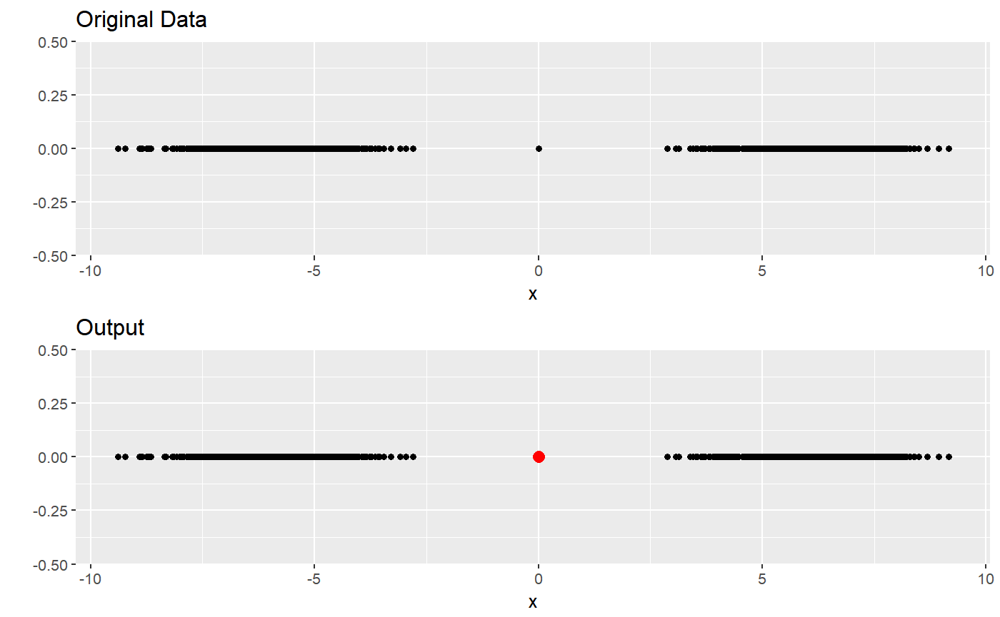
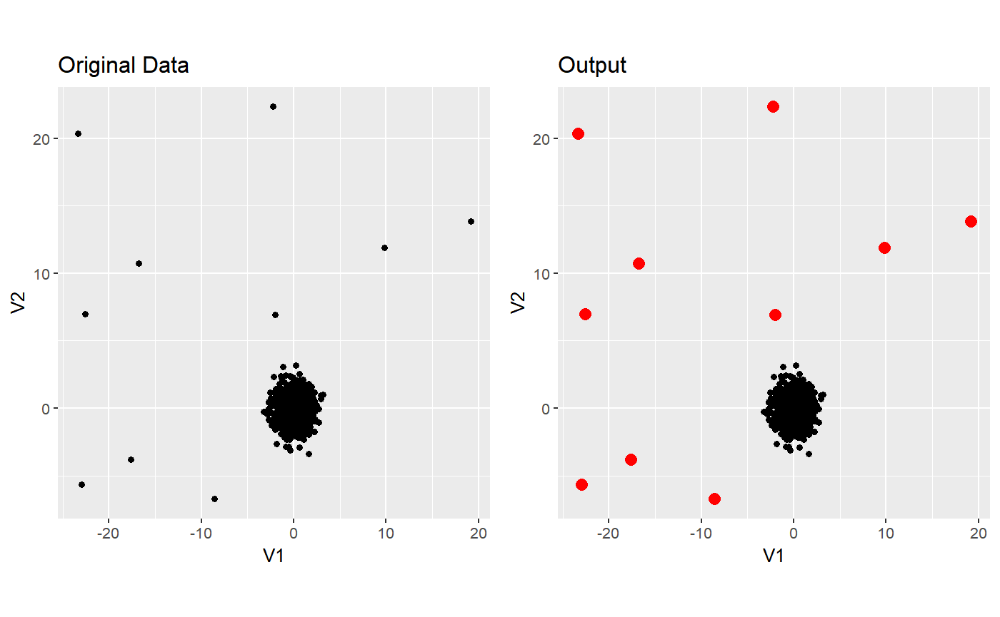

Detect anomalies in high dimensional data. This is a modification of
HDoutliers.
find_HDoutliers(data, maxrows = 1000, alpha = 0.01)
| data | A vector, matrix, or data frame consisting of numeric and/or categorical variables. |
|---|---|
| maxrows | If the number of observations is greater than |
| alpha | Threshold for determining the cutoff for outliers. Observations are considered outliers outliers if they fall in the \((1- alpha)\) tail of the distribution of the nearest-neighbor distances between exemplars. |
The indexes of the observations determined to be outliers.
If the number of observations exceeds maxrows, the data is first partitioned into lists
associated with exemplars and their members within radius of each exemplar, to
reduce the number of k-nearest neighbor computations required for outlier detection.
Wilkinson, L. (2018), `Visualizing big data outliers through distributed aggregation', IEEE transactions on visualization and computer graphics 24(1), 256-266.
require(ggplot2) set.seed(1234) data <- c(rnorm(1000, mean = -6), 0, rnorm(1000, mean = 6)) df <- tibble::tibble( index = rep(0, length(data)), data = data) data_plot <- ggplot(df, aes(x = data, y= index)) + geom_point() + xlab("x") + ylab("") + ggtitle("Original Data") data_out <- find_HDoutliers(data) output_plot <- data_plot + geom_point(data = df[data_out, ], aes(x=data, y = index), colour = "red", size = 3) + xlab("x") + ylab("") + ggtitle("Output") gridExtra::grid.arrange(data_plot, output_plot )set.seed(1234) n <- 1000 # number of observations nout <- 10 # number of outliers typical_data <- tibble::as.tibble(matrix(rnorm(2*n), ncol = 2, byrow = TRUE)) out <- tibble::as.tibble(matrix(5*runif(2*nout,min=-5,max=5), ncol = 2, byrow = TRUE)) data <- dplyr::bind_rows(out, typical_data ) data_out <- find_HDoutliers(data) data_plot <- ggplot(data, aes(x=V1, y= V2))+ geom_point() + ggtitle("Original Data")+ theme(aspect.ratio = 1) output_plot <- data_plot + geom_point(data = data[data_out, ], aes(x=V1, y = V2), colour = "red", size = 3) + ggtitle("Output") gridExtra::grid.arrange(data_plot, output_plot , nrow=1 )